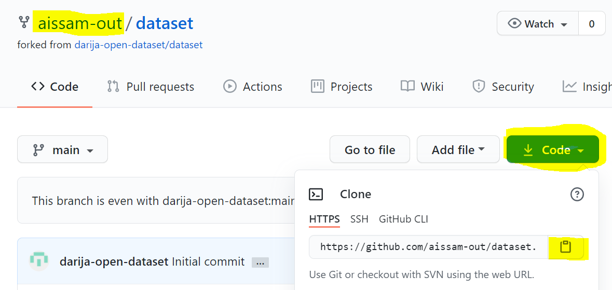
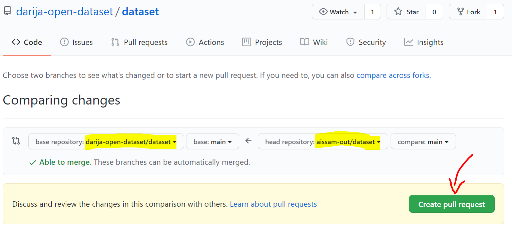

•••* Contribution
A step-by-step tutorial to guide you through the process of making Pull Requests to DODa repo on GitHub.

On your Github profile
Fork repo.
Go to DODa's GitHub repository and fork it by clicking
the button "fork":
Clone this fork
- Go to your profile, select the repo you've just forked.
- Download this fork (not DODa's repo!) on your local computer using:
* the terminal :
#git clone https://github.com/darija-open-dataset/dataset.git
* or directly through your favorite text editor.

Locally
Edit files
Add your cotribution by editing your copy of the fork locally. Don't change file names and directories.
Upload changes to fork
Update your GitHub fork with the modifications you've made locally :
#git add
#git commit -m "desctiption"
#git push
Your GitHub fork now contains all the changes you've made locally
Note : You can use a Git GUI client, your favorite text editor, or change files directly in
GitHub (😡) for that matter if you don't like using the terminal that much.
On DODa's GitHub profile
Make pull request
Go back to DODa's GitHub repository
(not yours!) and click on "Pull requests" then "New Pull Request".
Select your fork
- Click on "compare across forks"
- Select your fork from the second dropdown menu
- Verify that all changes showed in this page are only the ones you've made, then click on
"Create pull request"
- Describe the changes you've made
Request Merged
After your content is reviewed and accepted, it will be merged to the main repository,
and your pull request will be closed.
If you're not familiar with Git, you can simply remove your fork. And later on, when you
want to contribute again, you can repeat the steps above.
